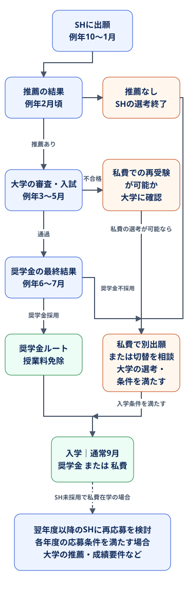
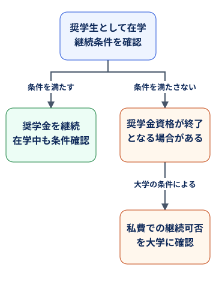

2025年の公式公表値
応募件数と奨学金授与数
80,000件の応募
奨学金授与数は4,500件超。応募件数と授与数を単純に割った参考値は約18ですが、正式な日本人向け・大学別の倍率ではありません。
「結局いくらもらえるのか」「いつ出願するのか」「どれくらい競争倍率があるのか」を分かりやすく整理しています。
出願前に知っておくべき重要な数字と流れをまとめています。
記事更新：2026年10月11日
全額免除
授業料の支払いが免除されます。
43,700 Ft／月
学士・修士・一貫制課程の支給額。
大学寮 または
40,000 Ft／月
無料の寮、または家賃への補助。両方を受け取る制度ではありません。
医療サービス・保険
法令に基づく医療サービスと補足医療保険。対象範囲・上限があります。
生活費・住居の支援は補助です。都市や住まい方に応じて、自己資金も用意する必要があります。
博士課程の生活費補助は別額です。課程別の支給額を見る
確認：2026年10月11日 ｜ 制度公式サイト（支給内容・条件）
支給内容・応募方法・私費留学との違いを動画で解説します。
スティペンディウム・ハンガリカムは、ハンガリー政府が提供する国費奨学金制度です。
学士・修士・博士課程が対象で、英語で学べるプログラムも多数あります。
例えば、SHでELTEとBMEを志望してノミネーションされなかった場合でも、ELTEの私費課程へ別に出願し、私費の選考を受ける選択肢があります。希望課程の募集・締切・出願条件を満たす必要があり、自動的に私費出願へ切り替わるわけではありません。
大学審査を通過した後に奨学金が不採用になった場合は、既存の審査結果を使って私費入学を検討できる大学・学部もあります。ELTE社会科学部はこの手続きを案内しています。
大学の入試自体に不合格だった場合は別です。同じ年度に私費で再受験できるとは限らないため、大学・専攻の規定を確認してください。
SHに採用されず私費で入学した場合も、各年度の応募条件を満たせば、大学に通いながら次の募集に再応募できます。再び不採用になった場合も、その後の募集で条件を満たすか確認して再応募を検討できます。
2026/27年度の要項では、ハンガリーの大学に私費で在籍し、同じ学位段階（学士→学士、修士→修士など）へ応募する人に、次の両方を求めています。
在籍大学の推薦は、送り出し機関によるノミネーションとは別です。通常の選考も必要で、採用や自動切り替えは保証されません。出願前に大学の奨学金担当へ相談し、その年度の募集要項・必要書類・締切を確認してください。
採用後に所定の条件を満たさない場合、奨学金資格が終了（取り消し）になることがあります。2026/27年度の学士・修士などの募集要項では、直近の在籍有効な2学期で平均18単位以上（合計36単位以上）の取得を求めています。在籍資格の喪失や、ハンガリーで生活・学修する義務への違反なども終了事由です。細かな扱いは適用される運営規則と大学に確認してください。
資格終了後に私費で学業を続けられるかは、大学の在籍・学費等の条件によります。過去にSHを受給した人の再応募には別の制限があるため、資格終了後も同じ学位段階で再応募できるとは限りません。これは、まだSHを受給したことのない私費在学生の再応募とは区別してください。
出典：SH 2026/27年度募集要項（2.2・3.2.3・5.3.4節、9〜10・15〜16・27〜28ページ）。
確認：2026年10月11日。出典：SH公式の選考手順、ELTE社会科学部の私費出願FAQ。私費の手続き・再受験の扱いは大学・学部・年度によって異なります。
応募できる課程・分野は、送り出し国との協定と当該年度の募集要項で決まります。国籍、希望する学位、大学・専攻の要件、必要書類、締切をそれぞれ確認してください。
英語要件は志望プログラムごとに異なります。奨学金の応募条件を満たしていても、大学の入学要件・選考を満たす必要があります。
公式の募集要項・応募案内で最新の条件を確認してください。
| 項目 | 内容 |
|---|---|
| 授業料 | 原則全額免除です。 |
| 生活費補助（学士・修士・一貫制） | 月額 43,700 Ft です。 |
| 生活費補助（博士） | 前半：月額 140,000 Ft ／ 後半：月額 180,000 Ft です。 |
| 住居補助 | 寮提供または月額 40,000 Ft です。 |
| 医療保険 | 指定範囲内で医療保険が適用されます。 |
支給内容の確認：2026年10月11日。公式の制度説明では、生活費全額を賄う支給ではないことも明記されています。住居・食費の予算は、以下のガイドで確認できます。


2025年の公式公表値
80,000件の応募
奨学金授与数は4,500件超。応募件数と授与数を単純に割った参考値は約18ですが、正式な日本人向け・大学別の倍率ではありません。
2026/27の公式公表値
113,806件
この応募件数だけでは採用倍率を計算できません。前年の授与数を仮定して、当年度の確定倍率として表示することはできません。
世界全体の応募件数、国別の推薦、大学の審査、最終採用は異なる段階の情報です。日本人の採用確率や個人の合格可能性を、上の割算から求めることはできません。
以下は既存の在籍集計です。集計年度の再確認が必要なため、現在の在籍者数や当年度の新規採用者数としては扱わないでください。
奨学金の「規模感」や「どの大学に留学生が多いか」を、分かりやすく整理しました。
細かい表を読むより、まずはこの3枚だけ見れば全体像をつかめます。
全体像
ハンガリー政府奨学金で学ぶ留学生の総数です。
日本の位置
人数が多い国の例
大学ランキング
デブレツェン大学
奨学金留学生が最も多い大学です。
留学生の受け入れ規模が大きいことが分かります。
学部留学でも十分に現実的
奨学生の中で一番多いのは学士課程です。大学院だけが中心ではありません。
日本人は少数派
日本人奨学生は全体のごく一部です。日本語での情報が少ない理由もここにあります。
奨学生は特定の大学に集中している
デブレツェン大学、ELTE、ペーチ大学 など、受け入れ規模の大きい大学に留学生が集まっています。
近年の競争倍率はかなり高い可能性があります
応募者数の増加と授与数の比較から見ると、近年はかなり倍率が高い制度と考えられます。
1. 応募者数 80,000件：Stipendium Hungaricum 公式ニュース Stunning statistics! Stipendium Hungaricum setting new application record in 2025
2. 応募者数 113,806件：Stipendium Hungaricum 公式ニュース More Applicants than Ever in the 2026/27 Application Period!
3. 2025年に 4,500件超の奨学金授与、支給内容 43,700 Ft / 40,000 Ft： Call for Applications 2026/2027
4. 支給内容の制度説明： About – Stipendium Hungaricum
5. 日本人奨学生数 182人、総在籍者数 10,742人、大学別人数などは、 Tempus Public Foundation（TKA）公開の Stipendium Hungaricum 統計 を使用しています。
※ 「2024/25 約66,700件」は、2025/26 の 80,000件が前年比20%増という公式ニュースから逆算した推定値です。
※ 応募件数と授与数の単純比較は、正式な大学別・国別の競争率ではありません。2026/27の採用倍率はここでは確定していません。
※ 在籍者数は各年度時点の総数であり、新規採用者数そのものではありません。
スティペンディウム・ハンガリカムは授業料が免除される奨学金ですが、 出願準備や試験内容、生活費などは大学や専攻によって大きく異なります。
実際にハンガリーの大学に通っている学生に話を聞くと、 出願の流れや留学生活をより具体的にイメージできます。
現役生を探す